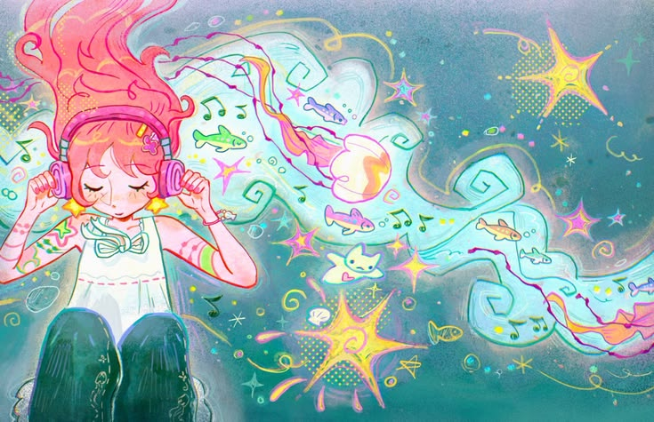
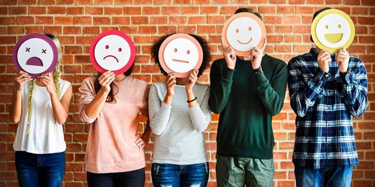

Tu mundo emocional también importa
El alto indice de ansiedad,deprecion y riesgo de suicidio en estudiantes, el cual se manifiesta en el bajo rendimiento academico y apatia generalizada hacia las actividades escolares y comunitarias
Conocer nuestras emociones también es aprender a cuidarnos
El alto indice de ansiedad,deprecion y riesgo de suicidio en estudiantes, el cual se manifiesta en el bajo rendimiento academico y apatia generalizada hacia las actividades escolares y comunitarias
"Las emociones son un proceso, un tipo particular de evaluación automática influenciada por nuestro pasado evolutivo y personal, en el que percibimos que algo importante para nuestro bienestar está ocurriendo, y una serie de cambios psicológicos y comportamientos emocionales comienzan a dar respuesta a la situación."
En otras palabras, las emociones nos preparan para afrontar eventos importantes sin tener que pensar en ellos. Estas respuestas emocionales son espontáneas; es decir, no elegimos sentirlas, sino que surgen automáticamente. De todas las emociones humanas que experimentamos, existen siete emociones universales que todos sentimos, trascendiendo las diferencias lingüísticas, regionales, culturales y étnicas.
Cada una de las emociones universales tiene señales, fisiologías y duraciones distintivas. Si bien varían en su inicio, duración y desaparición, las emociones generalmente no duran más de una hora. Si una emoción persiste durante un tiempo prolongado sin interrupción, es más probable que pueda clasificarse como un estado de ánimo o un trastorno.

Las emociones forman parte de nuestra vida cotidiana. Durante la adolescencia pueden sentirse con mayor intensidad debido a los cambios personales, escolares, familiares y sociales que ocurren durante esta etapa.
Cuando una persona aprende a reconocer lo que siente, puede encontrar mejores maneras de expresar sus necesidades y buscar ayuda cuando enfrenta una situación que resulta difícil.

Cargando información...
Cargando información...